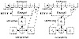
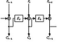

| Previous | Table of Contents | Next |
In CFB mode, data can be encrypted in units smaller than the block size. The following example will encrypt one ASCII character at a time (this is called 8-bit CFB), but nothing is sacred about the number eight. You can encrypt data one bit at a time using 1-bit CFB, although using one complete encryption of a block cipher for a single bit seems like a whole lot of work; a stream cipher might be a better idea. (Reducing the number of rounds of the block cipher to speed things up is not recommended [1269].) You can also use 64-bit CFB, or any n-bit CFB where n is less than or equal to the block size.
Figure 9.9 shows 8-bit CFB mode working with a 64-bit block algorithm. A block algorithm in CFB mode operates on a queue the size of the input block. Initially, the queue is filled with an IV, as in CBC mode. The queue is encrypted and the left-most eight bits of the result are XORed with the first 8-bit character of the plaintext to become the first 8-bit character of the ciphertext. This character can now be transmitted. The same eight bits are also moved to the right-most eight bit positions of the queue, and all the other bits move eight to the left. The eight left-most bits are discarded. Then the next plaintext character is encrypted in the same manner. Decryption is the reverse of this process. On both the encryption and the decryption side, the block algorithm is used in its encryption mode.

Figure 9.9 8-bit cipher-feedback mode.

Figure 9.10 n-bit CFB with an n-bit algorithm.
If the block size of the algorithm is n, then n-bit CFB looks like (see Figure 9.10):
Like CBC mode, CFB mode links the plaintext characters together so that the ciphertext depends on all the preceding plaintext.
Initialization Vector
To initialize the CFB process, the input to the block algorithm must be initialized with an IV. Like the IV used in CBC mode, it need not be secret.
The IV must be unique, though. (This is different from the IV in CBC mode, which should be unique but does not have to be.) If the IV in CFB is not unique, a cryptanalyst can recover the corresponding plaintext. The IV must be changed with every message. It can be a serial number, which increments after each message and does not repeat during the lifetime of the key. For data encrypted for storage, it can be a function of the index used to look up the data.
Error Propagation
With CFB mode, an error in the plaintext affects all subsequent ciphertext and reverses itself at decryption. An error in the ciphertext is more interesting. The first effect of a single-bit error in the ciphertext is to cause a single error in the plaintext. After that, the error enters the shift register, where it causes ciphertext to be garbled until it falls off the other end of the register. In 8-bit CFB mode, 9 bytes of decrypted plaintext are garbled by a single-bit error in the ciphertext. After that, the system recovers and all subsequent ciphertext is decrypted correctly. In general, in n-bit CFB a single ciphertext error will affect the decryption of the current and following m/n-1 blocks, where m is the block size.
One subtle problem with this kind of error propagation is that if Mallory knows the plaintext of a transmission, he can toggle bits in a given block and make it decrypt to whatever he wants. The next block will decrypt to garbage, but the damage may already be done. And he can change the final bits of a message without detection.
CFB is self-recovering with respect to synchronization errors as well. The error enters the shift register, where it garbles 8 bytes of data until it falls off the other end. CFB is an example of block cipher being used as a self-synchronizing stream cipher (at the block level).
In a synchronous stream cipher the keystream is generated independent of the message stream. The military calls this Key Auto-Key (KAK). On the encryption side, a keystream generator spits out keystream bits, one after the other. On the decryption side, another keystream generator spits out the identical keystream bits, one after the other. This works, as long as the two keystream generators are synchronized. If one of them skips a cycle or if a ciphertext bit gets lost during transmission, then every ciphertext character after the error will decrypt incorrectly.
If this happens, the sender and receiver must resynchronize their keystream generators before they can proceed. Frustrating matters even further, they must do this in such a way as to ensure that no part of the keystream is repeated, so the obvious solution of resetting the keystream generator to an earlier state won’t work.
On the plus side, synchronous ciphers do not propagate transmission errors. If a bit is garbled during transmission, which is far more likely than a bit being lost altogether, then only the garbled bit will be decrypted incorrectly. All preceding and subsequent bits will be unaffected.
Since a keystream generator must generate the same output on both the encryption and decryption ends, it must be deterministic. Because it is implemented in a finite-state machine (i.e., a computer), the sequence will eventually repeat. These keystream generators are called periodic. Except for one-time pads, all keystream generators are periodic.
The keystream generator must have a long period, one far longer than the number of bits the generator will output between key changes. If the period is less than the plaintext, then different parts of the plaintext will be encrypted the same way—a severe weakness. If a cryptanalyst knows a piece of the plaintext, he can recover a piece of the keystream and use that to recover more of the plaintext. Even if the analyst only has the ciphertext, he can XOR the sections encrypted with the same keystream and get the XOR of plaintext with plaintext. This is just the simple XOR algorithm with a very long key.
How long a period is long enough depends on the application. A keystream generator encrypting a continuous T-1 link will encrypt 237 bits per day. The keystream generator’s period must be orders of magnitude larger than that, even if the key is changed daily. If the period is long enough, you might only have to change the key weekly or even monthly.
| Previous | Table of Contents | Next |
){kind=link}
){kind=link}
){kind=link}
){kind=link}